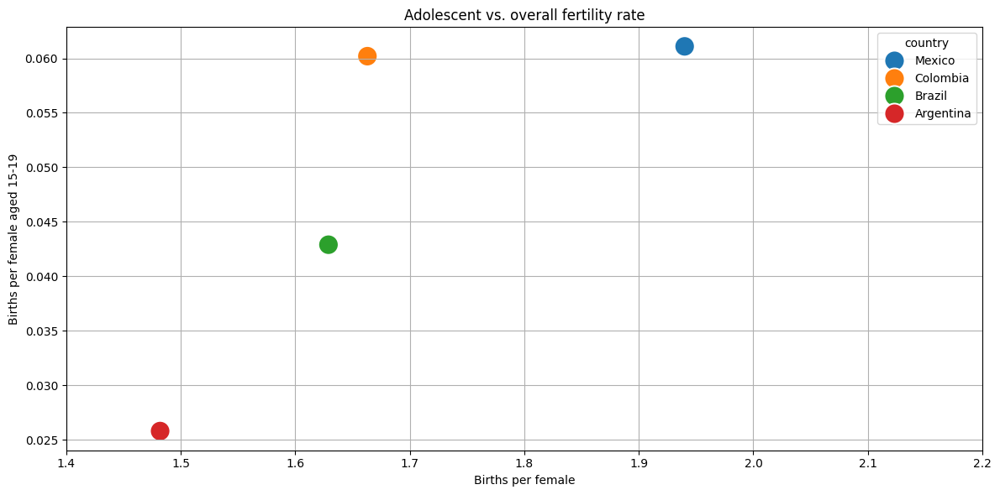
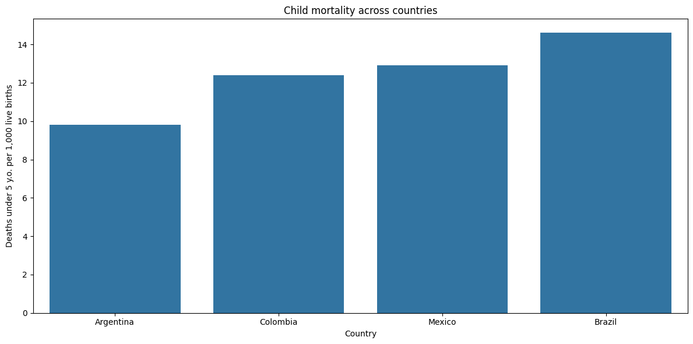
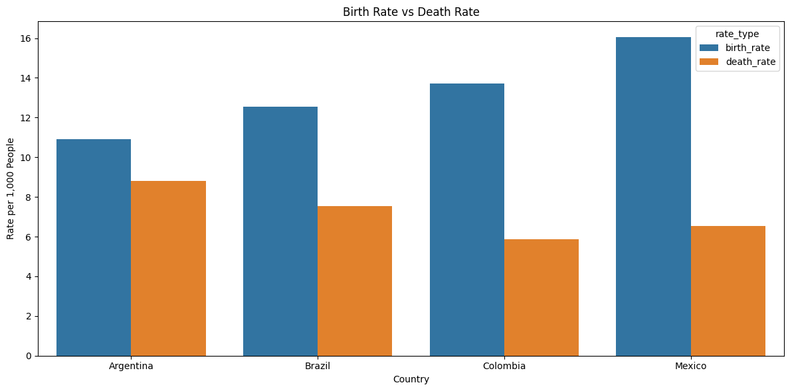
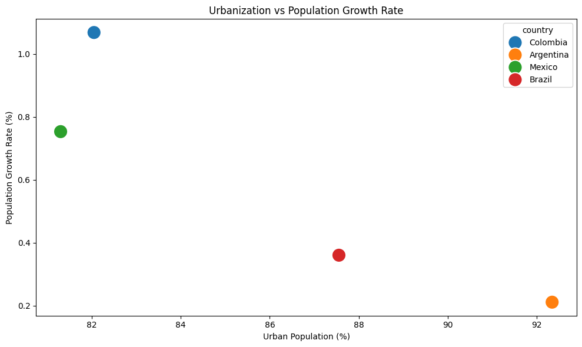

import pandas as pd
import sqlite3
import matplotlib.pyplot as plt
import seaborn as snsimport packages
connect to SQL
conn = sqlite3.connect('../data/wdi_data.db') fertility_rate
table
# SQL query
query = """
SELECT
country,
fertility_rate,
(adolescent_fertility_rate/1000) AS ado_fertility_rate
FROM wdi_data
WHERE fertility_rate IS NOT NULL AND adolescent_fertility_rate IS NOT NULL
ORDER BY fertility_rate DESC;
"""
df1 = pd.read_sql_query(query, conn)
display(pd.read_sql(query, conn))| country | fertility_rate | ado_fertility_rate | |
|---|---|---|---|
| 0 | Mexico | 1.940 | 0.061111 |
| 1 | Colombia | 1.663 | 0.060175 |
| 2 | Brazil | 1.629 | 0.042881 |
| 3 | Argentina | 1.482 | 0.025767 |
plot
plt.figure(figsize=(12, 6))
sns.scatterplot(
data=df1,
x='fertility_rate', y='ado_fertility_rate',
hue='country',
s = 300
)
plt.grid(True)
plt.xlim(1.4, 2.2)
plt.title('Adolescent vs. overall fertility rate')
plt.ylabel('Births per female aged 15-19')
plt.xlabel('Births per female')
plt.tight_layout()
plt.savefig('../figures/fertility_rate.png')
mortality_density
table
# SQL query
query = """
SELECT
country,
population_density,
under_5_mortality_rate
FROM wdi_data
WHERE population_density IS NOT NULL AND under_5_mortality_rate IS NOT NULL
ORDER BY under_5_mortality_rate;
"""
df2 = pd.read_sql_query(query, conn)
display(pd.read_sql(query, conn))| country | population_density | under_5_mortality_rate | |
|---|---|---|---|
| 0 | Argentina | 16.592272 | 9.8 |
| 1 | Colombia | 46.631766 | 12.4 |
| 2 | Mexico | 66.160712 | 12.9 |
| 3 | Brazil | 25.161868 | 14.6 |
plot
plt.figure(figsize=(12, 6))
sns.barplot(
data=df2,
x='country', y='under_5_mortality_rate'
)
plt.title('Child mortality across countries')
plt.ylabel('Deaths under 5 y.o. per 1,000 live births')
plt.xlabel('Country')
plt.tight_layout()
plt.savefig('../figures/child_mortality.png')
pop_decline
table
# SQL query
query = """
SELECT
country,
birth_rate,
death_rate,
(birth_rate - death_rate) AS circle_of_life
FROM wdi_data
WHERE birth_rate IS NOT NULL AND death_rate IS NOT NULL
ORDER BY circle_of_life ASC;
"""
df3 = pd.read_sql_query(query, conn)
display(pd.read_sql(query, conn))| country | birth_rate | death_rate | circle_of_life | |
|---|---|---|---|---|
| 0 | Argentina | 10.926 | 8.797 | 2.129 |
| 1 | Brazil | 12.555 | 7.539 | 5.016 |
| 2 | Colombia | 13.731 | 5.881 | 7.850 |
| 3 | Mexico | 16.041 | 6.521 | 9.520 |
plot
# Melt the dataframe to long format
df_melted = pd.melt(
df3,
id_vars='country',
value_vars=['birth_rate', 'death_rate'],
var_name='rate_type',
value_name='rate'
)
# Plot
plt.figure(figsize=(12, 6))
sns.barplot(
data=df_melted,
x='country', y='rate',
hue='rate_type'
)
plt.title('Birth Rate vs Death Rate')
plt.ylabel('Rate per 1,000 People')
plt.xlabel('Country')
plt.tight_layout()
plt.savefig('../figures/pop_decline.png')
pop_growth
table
# SQL query
query = """
SELECT
country,
urban_population_percent,
rural_population_percent,
population_growth
FROM wdi_data
WHERE
urban_population_percent IS NOT NULL
AND population_growth IS NOT NULL
"""
df4 = pd.read_sql_query(query, conn)
display(pd.read_sql(query, conn))| country | urban_population_percent | rural_population_percent | population_growth | |
|---|---|---|---|---|
| 0 | Colombia | 82.050 | 17.950 | 1.068293 |
| 1 | Argentina | 92.347 | 7.653 | 0.210809 |
| 2 | Mexico | 81.300 | 18.700 | 0.753117 |
| 3 | Brazil | 87.555 | 12.445 | 0.360181 |
plot
plt.figure(figsize=(10, 6))
sns.scatterplot(
data=df4,
x="urban_population_percent",
y="population_growth",
hue="country",
s = 300
)
plt.xlabel("Urban Population (%)")
plt.ylabel("Population Growth Rate (%)")
plt.title("Urbanization vs Population Growth Rate")
plt.tight_layout()
plt.savefig('../figures/pop_growth.png')